01.28.2010 06:36
NOAA buys 7 more RESON multibeam sonars
NOAA Signs Contract for Seven Seabat 7125-SV [Hydro
International]
... A real-time uncertainty output from the SeaBat 7125 may be used in PDS2000, along with information from other sensors to calculate a TPE (Total Propagated Error). Soundings may be filtered by setting either the relevant IHO order or by defining a custom vertical error limit. Other new features in SeaBat 7125-SV include roll stabilization, XYZ offsets for flexible transducer installations, Quality filter and advanced diagnostic which increase survey efficiency. Further, AutoPilot uses sonar tuning values from a default or user generated look-up table for hands free sonar operation. ... Six of the SeaBat sonar systems are to be mounted on Hydrographic Survey Launches of the SV Rainier, SV Fairweather, SV Thomas Jefferson and SV Ferdinand R. Hassler while the seventh system will be mounted on the SV Nancy Foster. ...
01.27.2010 08:50
Field images, Desk Crops, and UDel's New Zealand field blog
Ron
Schott has been running a fantastic Outcrop/Deskcrop series on
his blog where he shows off Gigapan's from the field and hand
samples back in his office. Well worth following if you enjoy
geology.
On the same note, Art Trembanis just sent me a link to his students' blogging of their trip to New Zealand. I've been following some of it on facebook and it looks like they have had an amazing field experience this year:
NZ GeolMast Winter 2010
On the same note, Art Trembanis just sent me a link to his students' blogging of their trip to New Zealand. I've been following some of it on facebook and it looks like they have had an amazing field experience this year:
NZ GeolMast Winter 2010
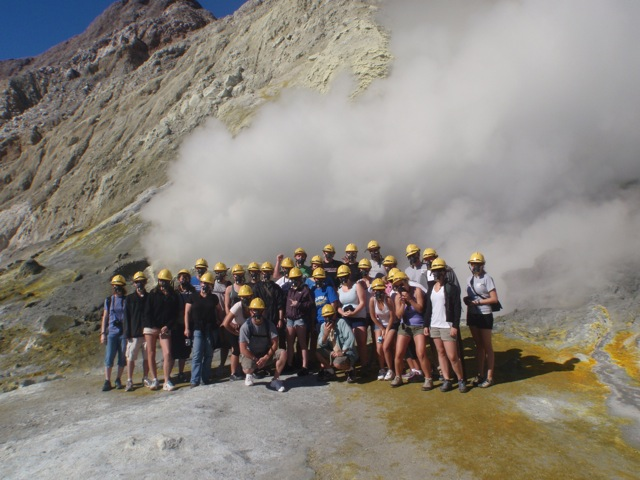
01.27.2010 06:17
Lloyd's AIS based global ship traffic
From the
Art Trambanis/CSHEL news channel:
A Year of Global Shipping Routes Mapped by GPS [Wired Science]
I would have guessed that they used S-AIS (satellite) messages picked up by SpaceQuest, ComDev, or OrbCom. But it turns out that they just used great circle routes from itineraries.
Credit to Dale Chayes for the details of the paper: The complex network of global cargo ship movements by Kaluza, Kolzsch, Gastner, Blasius. The Abstract:
To give you a feel what an actual global data set feels like, you can interact with the global Vessel Observation System (VOS) data in Google Earth yourself by going here:
http://vislab-ccom.unh.edu/vos/ (By Ben Smith)
Or you can take a look at 2 minutes of S-AIS data from SpaceQuest over South Africa:
S-AIS-AprizeSat-20090729.kmz
A Year of Global Shipping Routes Mapped by GPS [Wired Science]
I would have guessed that they used S-AIS (satellite) messages picked up by SpaceQuest, ComDev, or OrbCom. But it turns out that they just used great circle routes from itineraries.
Credit to Dale Chayes for the details of the paper: The complex network of global cargo ship movements by Kaluza, Kolzsch, Gastner, Blasius. The Abstract:
Transportation networks play a crucial role in human mobility, the exchange of goods, and the spread of invasive species. With 90% of world trade carried by sea, the global network of merchant ships provides one of the most important modes of transportation. Here we use information about the itineraries of 16,363 cargo ships during the year 2007 to construct a network of links between ports. We show that the network has several features which set it apart from other transportation networks. In particular, most ships can be classified in three categories: bulk dry carriers, container ships and oil tankers. These three categories do not only differ in the shipsâÄô physical characteristics, but also in their mobility patterns and networks. Container ships follow regularly repeating paths whereas bulk dry carriers and oil tankers move less predictably between ports. The network of all ship movements possesses a heavy-tailed distribution for the connectivity of ports and for the loads transported on the links with systematic differences between ship types. The data analyzed in this paper improve current assumptions based on gravity models of ship movements, an important step towards understanding patterns of global trade and bioinvasion.
To give you a feel what an actual global data set feels like, you can interact with the global Vessel Observation System (VOS) data in Google Earth yourself by going here:
http://vislab-ccom.unh.edu/vos/ (By Ben Smith)
Or you can take a look at 2 minutes of S-AIS data from SpaceQuest over South Africa:
S-AIS-AprizeSat-20090729.kmz
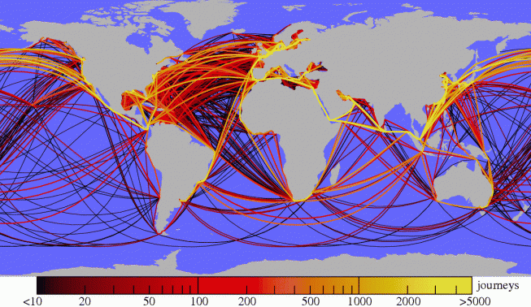
01.26.2010 10:20
The return of panospheric imaging (but at a smaller scale)
When I saw this video, I had
flashbacks to working with Geb
Thomas and the CMU Field
Robotics Center on a panospheric camera for the Nomad rover in
the Atacama desert.
Our paper on the topic came out back in 1997: Operating Nomad during the Atacama Desert Trek [PDF]
Found via News: Google Earth in the Classroom, More 3D in Australia, DIY StreetView [Google Earth Blog]
Our paper on the topic came out back in 1997: Operating Nomad during the Atacama Desert Trek [PDF]
Found via News: Google Earth in the Classroom, More 3D in Australia, DIY StreetView [Google Earth Blog]
01.26.2010 06:12
IODP Cruise to Antarctica - Week Report 2
Aliens are assisting in the ocean
drilling project off of Antarctica... 
You can follow the work on the JOIDES Resolution via Facebook.
You can follow the work on the JOIDES Resolution via Facebook.
01.25.2010 12:50
NOAA and Google
Picture
This: NOAA, Google Join Forces to Visualize Scientific Data
The agreement lists six topic areas in which NOAA and Google may
pursue cooperative research projects of mutual interest:
* Engaging the public in ongoing and historic scientific
expeditions including those of the NOAA ship Okeanos Explorer;
* Compiling and improving bathymetric datasets to display in
Google Earth and make available for downloading;
* Expanding NOAA efforts to publish oceanographic data, especially
data from the NOAA-led Integrated Ocean Observing System;
* Expanding NOAA efforts to publish climate data, especially data
from the greenhouse gas monitoring system;
* Increasing the amount of data available for NOAAâÄôs Science on a
Sphere, an educational Earth science display system,
[http://sos.noaa.gov/] by adapting it to display files in the
Keyhole Markup Language, the file format Google Earth and Google
Maps use for geographic data; and
* Providing interactive access to marine zoning and regulatory
information concerning regions such as continental shelf
boundaries and marine protected areas.
It's a shame that there are no images in the press release.01.22.2010 09:21
Spot did a somewhat better job tracking
Update 2011-Jan14: I have
since SPOT tracks that were fantastic all the way up to New
Brunswick, Canada and have second hand reports of it working well
in the lower half of Alaska. I think that my spot unit was faulty.
I still think that the spot units without an LCD display are
confusing. I would feel better with a unit that was more clear
about what it was up to.
Yesterday, I took along my Spot personal locator (points available for 6 days) to give it yet another chance. When I tried it last year, the results were really bad. I still thing the interface is horrible, but this time the device did a lot better job. I got 8 position reports during 2 and a half hours while out at the LNG ship off of Boston. I wore it on my belt the whole day. It got my first morning okay message, but failed to get my second hello. Out of a 12 hours of running, I got 2.5 hours of position reports mostly while on the bridge of the ship (where I never expected it to work). We spent about 2 hours on the upper deck of a workboat, but never got a postition report from that. Overall, with a brand new battery installed that morning, the unit did better, but I still think this is not a well designed device.
Yesterday, I took along my Spot personal locator (points available for 6 days) to give it yet another chance. When I tried it last year, the results were really bad. I still thing the interface is horrible, but this time the device did a lot better job. I got 8 position reports during 2 and a half hours while out at the LNG ship off of Boston. I wore it on my belt the whole day. It got my first morning okay message, but failed to get my second hello. Out of a 12 hours of running, I got 2.5 hours of position reports mostly while on the bridge of the ship (where I never expected it to work). We spent about 2 hours on the upper deck of a workboat, but never got a postition report from that. Overall, with a brand new battery installed that morning, the unit did better, but I still think this is not a well designed device.
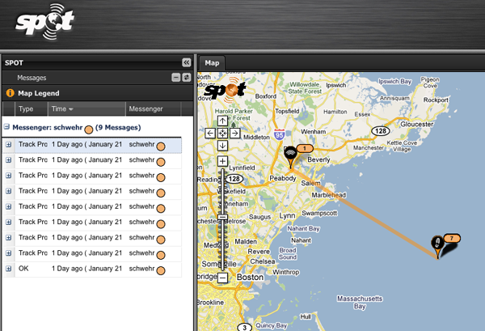
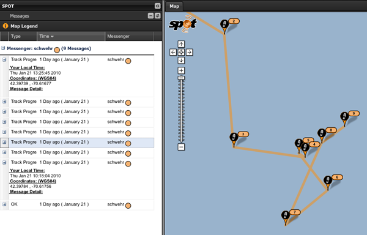
01.22.2010 06:56
Visiting the LNG ship Explorer at the North East Gateway
Yesterday, I got the chance to go out
to the LNG ship Explorer, which is currently at the North East
Gateway (NEG) terminal. This was my first time on a super tanker.
In the morning, I met the Gateway Endeavor in Salem.
We had a short ride out that included training on how to go through a basket transfer. You put your arms through the ropes and stand on the outside of the orange ring at the bottom. You throw your luggage luggage in the middle. Then they crane you from ship to ship. It wasn't a big deal on such a nice day, but it must be pretty crazy if you have to do that in foul weather.
This is the ship that we transfered onto. She is HUGE. She is off loading gas to the pipeline right now and providing natural gas to heat homes in New England.
We headed up to the bridge and got a look at the whole ship from up high. You can see on the left that it extends out crazy far.
Here is what the bridge looks like. The Explorer is a very new ship and bridge has a very clean design. I noticed that pilot port for AIS is right up front in the middle and has a power outlet right next to it.
Here is me on the deck of the ship next to the piping that transfers gas around the ship.
We were waiting for our crane ride off the ship to the awaiting Manisee workboat that (eventually) took us back to Salem. Apparently, in 1986, the Manisee was used in the movie One Crazy Summer when it used to be a car car ferry boat.
To finish off the day, I got a great view of the sun setting over Boston.
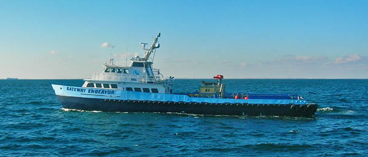
We had a short ride out that included training on how to go through a basket transfer. You put your arms through the ropes and stand on the outside of the orange ring at the bottom. You throw your luggage luggage in the middle. Then they crane you from ship to ship. It wasn't a big deal on such a nice day, but it must be pretty crazy if you have to do that in foul weather.
This is the ship that we transfered onto. She is HUGE. She is off loading gas to the pipeline right now and providing natural gas to heat homes in New England.
We headed up to the bridge and got a look at the whole ship from up high. You can see on the left that it extends out crazy far.
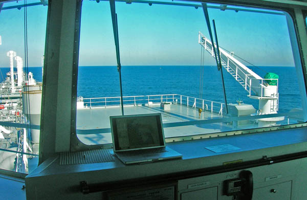
Here is what the bridge looks like. The Explorer is a very new ship and bridge has a very clean design. I noticed that pilot port for AIS is right up front in the middle and has a power outlet right next to it.
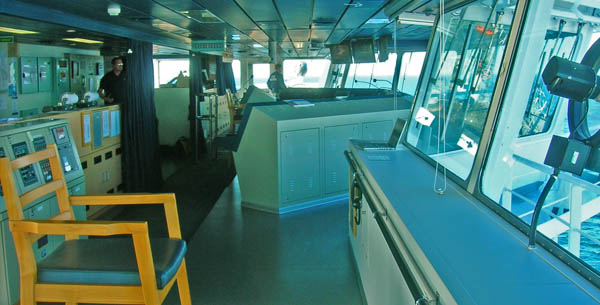
Here is me on the deck of the ship next to the piping that transfers gas around the ship.
We were waiting for our crane ride off the ship to the awaiting Manisee workboat that (eventually) took us back to Salem. Apparently, in 1986, the Manisee was used in the movie One Crazy Summer when it used to be a car car ferry boat.
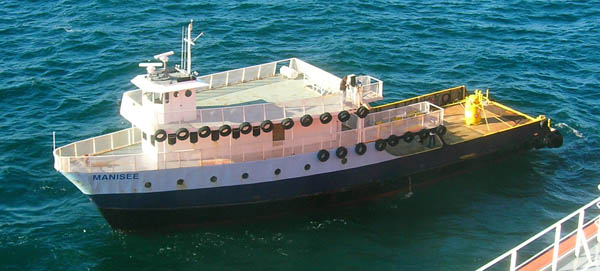
To finish off the day, I got a great view of the sun setting over Boston.
01.20.2010 17:55
Any easy way to decode AIS with gpsd (no python)
I didn't catch if Aaron or Dane
pointed this out, but it's a great tool. GPSd has a command line
tool called gpsdecode that knows about AIS as of GPSd
version 2.90. Here I am using a svn trunk copy from yesterday.
gpsdecode can output JSON, so importing the data to a variet of
tools should be fairly easy. First some sample data from
today:
Then decoding... a message 14 appears that should not be there, but the shipdata msg 5 is not. Hopefully, this will give me a chance to contribute to Eric S. Raymond's (ESR) hard work adding AIS to GPSd (thanks Eric!)
grep AIVDM gall-2010-01-20 | head -10 | tail -4 !AIVDM,1,1,,A,152JPuOP00JvJ8nHvW`0j?v020Sn,0*55,d-053,S2239,t235959.00,T59.70994503,r01SSSP1,1263945603 !AIVDM,2,1,3,A,59NS7F@2=bJl7PHC:204i85:222222222222221AE`P,0*46,d-107,S2093,t235955.00,T55.82982737,r003669959,1263945597 !AIVDM,2,2,3,A,G94N@0E@DVQEp;hC1iDR@H888880,2*4E,d-107,S2093,t235955.00,T55.82982737,r003669959,1263945597 !AIVDM,1,1,,A,19NRpnh00SJq:;<GkkNm?4Al0@QF,0*34,d-108,S2096,t235955.00,T55.90987913,r003669959,1263945597That should be a msg 1, msg 5 (that covers two parts), and a msg 1.
Then decoding... a message 14 appears that should not be there, but the shipdata msg 5 is not. Hopefully, this will give me a chance to contribute to Eric S. Raymond's (ESR) hard work adding AIS to GPSd (thanks Eric!)
grep AIVDM gall-2010-01-20 | head -10 | tail -4 | gpsdecode -j | grep class
{"class":"AIS","type":1,"repeat":0,"mmsi":338075893,"scaled":true,
"status":"Not defined","turn":"nan","speed":0.0,"accuracy":false,
"lon":-70.2528,"lat":43.6530,"course":200,"heading":511,"second":0,
"maneuver":0,"raim":true,"radio":4588}
{"class":"AIS","type":14,"repeat":1,"mmsi":223232012,"scaled":true,
"text":"L#X3NSP5MS$7CPBAR TUZHE2QG$"}
{"class":"AIS","type":1,"repeat":0,"mmsi":636008667,"scaled":true,
"status":"Under way using engine","turn":0,"speed":3.5,"accuracy":false,
"lon":-71.3995,"lat":41.6100,"course":1340,"heading":136,"second":58,
"maneuver":0,"raim":false,"radio":135340}
01.20.2010 12:28
Using GPSD to read AIS data
Here is my first program to read AIS
data with GPSD. First I started the gps daemon such that I can see
what it is doing in a terminal:
sudo gpsd -N -G -D 4 ais://localhost:31414Then I created this code that does a dumb poll. This is not a good way to write a program to listen for data. It will be hard on the system.
#!/usr/bin/env python
import gps
import time
daemon = gps.gps(host='localhost', mode=gps.WATCH_ENABLE|gps.WATCH_JSON|gps.WATCH_SCALED)
while True:
if not daemon.waiting():
time.sleep(0.01)
continue
msg = None
try:
msg = daemon.next()
except:
print 'ERROR: some bug with GPSD'
continue
if msg['class'] != 'AIS':
continue
if msg['type'] in (1,2,3):
print 'position message from: ', msg['mmsi']
continue
print 'msg:', msg['type']
Then when I run it, I see messages coming in!
./gpsd_test.py position message from: 366909530 position message from: 367043190 position message from: 366974680 position message from: 310470000 position message from: 367192060 position message from: 367360990 position message from: 367078250 msg: 4 msg: 4 msg: 14 position message from: 366998520 msg: 14 position message from: 205445000
01.20.2010 10:20
Snowy New Hampshire
We got two snow storms in a row with
the 2nd finishing up late last night. With the sun out, NH is a
magical place. This is the view out my office window today.
Taken with ye-old-iphone.
Taken with ye-old-iphone.
01.20.2010 09:42
quick test of running an IRC server
Les and I have been discussing the
rolls that IRC might play at the office and on ships for at least
the last 6 months. I finally did a quick test to see if I could get
things running in just a few minutes. The results were great! I
have a running server and we had two different users from one local
account and one out on our private network. Here is the process:
fink install ngircd sudo ngircd -n -p # Keep it forground and don't try to connect to other servers [58376:5 0] ngircd 13-SYSLOG+ZLIB+SSL+TCPWRAP+ZEROCONF+IDENT+IRCPLUS+IPv6-powerpc/apple/darwin9.8.0 started. [58376:6 0] Activating: no-daemon-mode, passive-mode. [58376:6 0] Reading configuration from "/sw/etc/ngircd.conf" ... [58376:4 0] No administrative information configured but required by RFC! [58376:5 0] No SSL server key configured, SSL disabled. [58376:4 0] Warning: Error during SSL initialization, continuing ... [58376:6 0] ServerUID must not be 0, using "nobody" instead. [58376:6 0] Running as user nobody(-2), group nobody(-2), with PID 58376. [58376:6 0] Not running with changed root directory. [58376:6 0] IO subsystem: kqueue (initial maxfd 100, masterfd 3) [58376:6 0] Now listening on [0::]:6667 (socket 4). [58376:6 0] Now listening on [0.0.0.0]:6667 (socket 5). [58376:6 1] Successfully registered "Server Info Text" with Rendezvous. [58376:6 1] Successfully registered "Server Info Text" with Rendezvous. [58376:6 142] Accepted connection 6 from 192.168.8.236:60588 on socket 5. [58376:6 142] IDENT lookup for connection 6: no result. [58376:5 142] User "goatbar_!~goatbar_@eel.ccom.nh" registered (connection 6).Then I fired up Converstation on the mac and added a new server. Then I added a channel to the server. Jordan then joined the channel from his machine and we have a working channel.
01.19.2010 14:38
USCG policy on AIS data sharing
Interim Policy
for the Sharing of Information Collected by the Coast Guard
Nationwide Automatic Identification System - They are
requesting comments.
SUMMARY: The Coast Guard has developed an interim policy for the access and sharing of information collected by the Coast Guard Nationwide Automatic Identification System (NAIS). The Coast Guard is also seeking comments on the applicability and levels of sharing of information collected by the NAIS, the definition of historical NAIS information, and any commercial or security sensitivities with respect to sharing NAIS information in order to assist us in the development of the final policy on NAIS information sharing. This policy would serve as guidance for Coast Guard program managers and field units regarding the sharing of information collected by the NAIS with foreign governments, Federal, State, local, and Indian tribal governments, and non-government entities. ...Down aways, the document specifies their levels of info sharing:
Levels of Information Sharing
The following three levels pertain to information collected by the
Coast Guard NAIS.
The First level (Level A) is unfiltered (real-time) information
collected by the NAIS that is less than 12 hours from transmission.
Level A information may be shared with U.S. or foreign governments for
legitimate internal government use (i.e., law enforcement, maritime
safety, defense, and security purposes). The final policy would clarify
that this information should be handled in accordance with Department
of Homeland Security policies concerning sensitive but unclassified
information, including by marking this information ``For Official Use
Only'' (FOUO), or any successor controlled unclassified information
marking and handling requirements subsequently implemented by the
Department. Level A information would be handled as FOUO, or otherwise
in accordance with another controlled unclassified information
designation approved by the Department, due to the potential commercial
sensitivities of the information collected by the NAIS and the
unfiltered, embedded addressed and encrypted information, the release
of which may pose a security risk.
The Second level (Level B) is filtered (real-time) information
collected by the NAIS that is less than 12 hours from transmission.
Level B information may be shared with foreign governments or U.S.
Federal, State, local, and Indian tribal governments, and with non-
government entities that are contractually supporting a Federal
government agency's operations or research and development efforts,
Coast Guard validated port partners, or non-governmental organizations
with which the U.S. has an established or formalized relationship
(e.g., port authorities, pilot associations, local law enforcement
agencies, etc.). Level B may filter out encrypted and addressed
information as appropriate and will be filtered as the NAIS system
filtering capabilities become available. As with Level A information,
the final policy would clarify that this information should also be
handled as FOUO or other appropriate designation due to the potential
(but unverified) commercial sensitivities of the information collected
by the NAIS and, if applicable, the embedded addressed and encrypted
information, the release of which may pose a security risk.
The Third level (Level C) is information collected by the NAIS that
is more than 12 hours from transmission. This information should be
considered historical and no longer needing to be handled as FOUO.
Requests for filtered or unfiltered historical information would be
processed in accordance with the Freedom of Information Act, 5 U.S.C.
552.
In an effort to continue to enhance navigation safety and security,
and to protect commercial and proprietary interests, this information
may not be used for purposes other than those intended for the
disclosure as approved. Foreign governments, Federal, State, local and
Indian tribal governments, and non-government entities shall not
retransmit or redistribute the information stream in any form other
than those intended for the disclosure as approved, shall not charge a
fee for its usage, and will be required to execute documentation
imposing restrictions on the use of information collected by the NAIS.
Any provision of information collected by the NAIS to foreign
governments will be coordinated with and through the Department of
State, as needed.
Implementation of the final policy would be subject to NAIS system
capability, especially with respect to evolving capabilities to filter
NAIS information.
01.17.2010 19:51
1998 Mars Pathfinder VR visualization
Yet another video digitized from old
VHS tapes. This 1998 video shows 3D models created with the Stereo
Pipeline. The results are first shown in Mars Map (teal/aqua
background) and then in the first version of Viz. These were done
on an SGI Onyx2 Deskside and dump via a scan converter to VHS tape.
The research was funded through NASA's Telepresence Intercenter
Working Group (TRIWG). The last bit of the video shows
level-of-detail (LOD) using mesh reduction software.
01.17.2010 19:25
iTunesU on the XBox360
I have been watching the Stanford
iPhone Winter 2010 class from iTunesU on my XBox360. I subscribed
to the class in iTunes on my Mac. I then start up Rivet. Then in
the XBox, under My Xbox -> Video Library. I then navigate to my
laptop's iTunes directory and select the Lecture.
The picture is much better that the picture from my iPhone shows. This is great as I have the video playing on the HDTV and I have the laptop's screen free, plus it works fine with the laptop on wireless.
The picture is much better that the picture from my iPhone shows. This is great as I have the video playing on the HDTV and I have the laptop's screen free, plus it works fine with the laptop on wireless.
01.16.2010 17:21
3D stereo modeling in Haughton Crater, Devon Island
This work comes from Pascal Lee
inviting me to spend some time at Haughton Crater on Devon Island
back in June, 1998.
01.16.2010 16:44
3D stereo vision modeling of Yellowstone Hotsprings
One of the cameras was having
troubles, so there are some yellow frames. Pardon the quality...
this is a 1998 video digitized from an old VHS tape. More videos to
come as I get them converted back to digital.
I created this video while at NASA Ames in 1998. This was done with the Stereo PIpeline and OpenInventor on an SGI Onyx2 Deskside and written to VHS tape. I took the Nomad science camera system along with Deena Braunstein out to a number of places that she was looking at for her PhD while at Stanford. The research was done under a research permit for working in the park held by Professor Don Lowe.
I created this video while at NASA Ames in 1998. This was done with the Stereo PIpeline and OpenInventor on an SGI Onyx2 Deskside and written to VHS tape. I took the Nomad science camera system along with Deena Braunstein out to a number of places that she was looking at for her PhD while at Stanford. The research was done under a research permit for working in the park held by Professor Don Lowe.
01.16.2010 09:06
My Google Tech Talk in the UNH iTunesU
I just watched the first lecture from
the Stanford iTunesU
iPhone programming class. That made me realize that I never
checked up to see if my Google Tech Talk that I gave at the 2008
Fall AGU is online. Turns out that
it is online under Research!
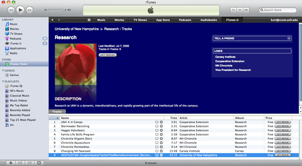
01.15.2010 16:45
Open Street Maps and disaster response
This is the reason I pushed the
Environmental Response Management Application (ERMA) to switch to
Open Street Map (OSM) as one of the possible background layers. The
potential for responders to immediately mark bridges and roads as
blocked or gone is huge.
Haiti Earthquake Mapping [FiducialMark.com]
Haiti Earthquake Mapping [FiducialMark.com]
... OpenStreetMap only needs a one-word description: fantastic. I read earlier today that there have been over 400 edits made to Haiti since the Earthquake. People around the world are donating their time to help out the cause. Another great thing about it is that it is extremely easy to check out data and then pull it into another application âÄì more on that below. ...See also: Haiti OpenStreetMap Response [OpenGeoData] and OpenStreetMap's WikiProject Haiti
01.14.2010 22:55
Martian Motion Tech Challenges - 1988 and 1989
So I am only 16 in this video. The
video is the promo for the 1990 Martian Motion Tech Challenge in San Jose,
CA. The big wheel with purple tread that went really slow is my
entry with Cheryl Ridder. This is my first test of a canopus
ADVC-55 Analog SD video to DV converter. Just used iMovie to
capture and and Quicktime Pro 7 to convert to a QuickTime H.264
video.
01.14.2010 22:01
Augemented reality for maintenance tasks
Someone was recently commenting to me
that they thought augmented reality for repair tasks was dead and
gone. Here is an example of a recent research study on that topic.
Fun to see that they are using a head mounted system combined with
a wrist mounted Android system.
Augmented Reality To Help Military Mechanics Fix Vehicles (Video) [Singularity Hub] (found via Slashdot Tech)
Augmented Reality To Help Military Mechanics Fix Vehicles (Video) [Singularity Hub] (found via Slashdot Tech)
01.14.2010 11:38
White board and tablet spatial data entry
These are nice technologies for
entering areas in a group. This would be good at a command center.
The data is going into Arc/GIS using
ArcSketch. We used to put dislays up on a whiteboard and use
pens to create figures, which we would take pictures of.
Circling areas up on the whiteboard using eBeam:
Or on a Sympodium tablet display:
Circling areas up on the whiteboard using eBeam:
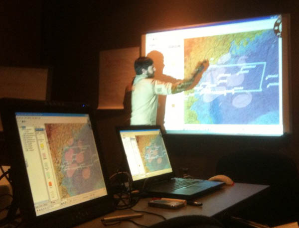
Or on a Sympodium tablet display:
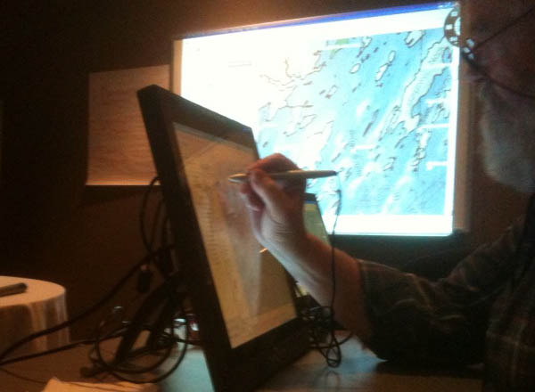
01.14.2010 10:47
ERMA - a public view
ERMA now has a public view that
anyone can use. Those with an account can see more, but the idea is
to allow the basics for the public.
https://portsmouth.erma.unh.edu/
For this last one, I added the black lines to show you where I clicked to get a NMFS Restoration Project.
https://portsmouth.erma.unh.edu/
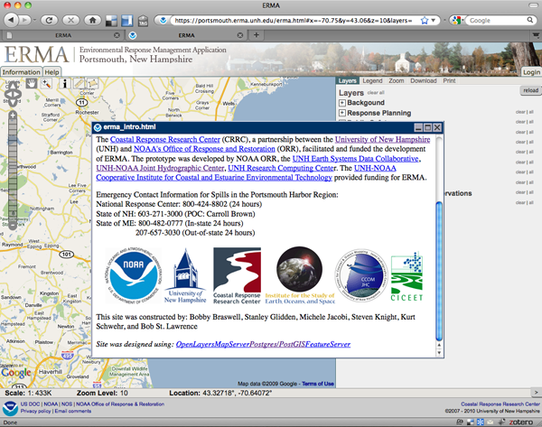
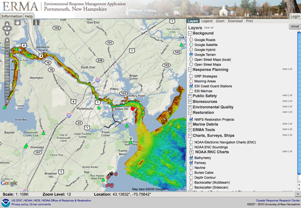
For this last one, I added the black lines to show you where I clicked to get a NMFS Restoration Project.
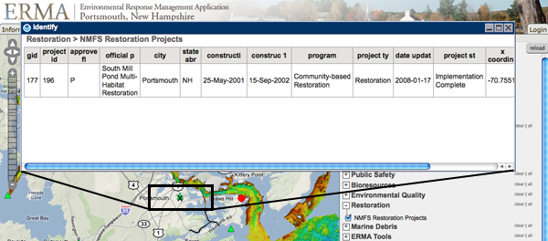
01.14.2010 10:10
ERMA on the iPhone
I was talking to Nancy Kinner and she
was saying that Blackberrys are not able to view the Environmental
Response Management Application (ERMA) web views. The Blackberry
said that it does not support Javascript. I just gave it a try on
the iPhone and it definitely works. However, I am not sure how to
click in the OpenLayers map to query the data layers.
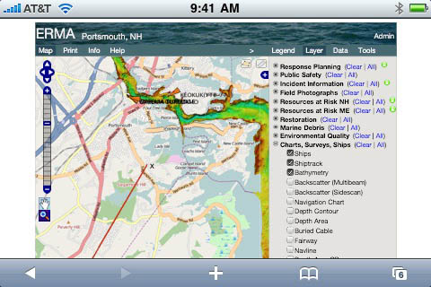
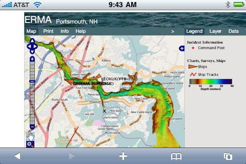
01.12.2010 09:28
Phoenix Mars Lander as the ice recedes
The ice is receding in the areas
around the Martian north pole. The image is in the Planetary Photo
Journal as PIA12490:
Phoenix Lander Amid Disappearing Spring Ice or there is a press
release as PR
2010-008: NASA to Check for Unlikely Winter Survival of Mars
Lander
There are attempts to listen for Phoenix in the hopes that it might wake up, but chances are small. NASA satellite to scan for signs of life from old Mars spacecraft [networkworld.com]
It's too bad that there wasn't budget for a bomb proof standalone system that could do DTE (direct to earth) transmissions for years of maybe just temperature. Having an antenna on the surface would let the weather and atmosphere folks learn alot.
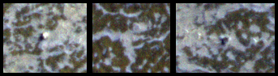
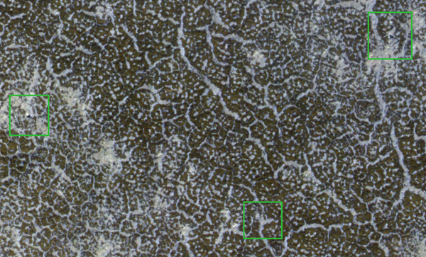
There are attempts to listen for Phoenix in the hopes that it might wake up, but chances are small. NASA satellite to scan for signs of life from old Mars spacecraft [networkworld.com]
It's too bad that there wasn't budget for a bomb proof standalone system that could do DTE (direct to earth) transmissions for years of maybe just temperature. Having an antenna on the surface would let the weather and atmosphere folks learn alot.
01.08.2010 16:25
Nice Hubble Deep Field visualization
The good stuff in this video starts
about 3 minutes in...
01.07.2010 15:31
Location aware emacs org-mode and geotagging?
While working on a entry in my emacs
org-mode work log, I wrote down the position of an instrument that
one of our engineers just deployed in the field. I suddenly
realized that I had not seen anything in org that implied that is
location aware or able to tag where things are. The closest that I
have seen is in the calendar mode for
sunrise and sunset times:
Then, once geotagging is possible, we could create a KML export mode that would take the time and position tags to produce something like my Google Earth Resume (GER). Imagine a field scientist out with an iPhone or Android phone taking notes in a org-mode style and able to tag those notes (and photos) such that back in the office, they can export a visualization of all of those notes.
I emailed the idea to the org-mode mailing list: [Orgmode] geolocation / geotagging in org-mode
Open tools are great. I just need more time to learn the stuff and write code for what I'd like to be added.
Too bad Mano Marks' upcoming workshop on Working with Geospatial Data Using Open Source Tools is in Berkeley, CA (on the wrong coast for me.)
(setq calendar-latitude 43.135397) (setq calendar-longitude -70.939533) (setq calendar-location-name "Durham, NH")But what I really want is the ability to tag locations in the document. Then I could ask for log entryies that are within 1 km of say the light house in New Castle, NH. There may already be a location tagging strategy, but I can't find anything in there. Perhaps something based on WKT would work. This would allow other shapes, not just points. However, I don't really want to have to go look up where I am currently at with a GPS, an address geocoding tool, or with location detection service. It has to be possible to do something like the Firefox geolocation with Location-Aware Browsing. If only I were a decent lisp programmer (working on that).
Then, once geotagging is possible, we could create a KML export mode that would take the time and position tags to produce something like my Google Earth Resume (GER). Imagine a field scientist out with an iPhone or Android phone taking notes in a org-mode style and able to tag those notes (and photos) such that back in the office, they can export a visualization of all of those notes.
I emailed the idea to the org-mode mailing list: [Orgmode] geolocation / geotagging in org-mode
Open tools are great. I just need more time to learn the stuff and write code for what I'd like to be added.
Too bad Mano Marks' upcoming workshop on Working with Geospatial Data Using Open Source Tools is in Berkeley, CA (on the wrong coast for me.)
01.07.2010 14:17
BAGs in Google Earth via iShowU HD
I broke down and got myself a copy of
iShowU HD. It works pretty well. It used about 1.5 GB of space
while recording a 4.5 min video, but that gets reclaimed when the
movie is finished. The results are quite nice. Here is a the same
AGU BAG visualization in Google Earth. I really should make a
Google Earth tour for the visualization.
In case you are curious, these are the NOAA hydrographic surveys that went into the visualization. Some BAGs were too large to process in the time available for AGU and were skipped. The visualization had 276 surveys with 835 out of 1442 BAG files processed.
In case you are curious, these are the NOAA hydrographic surveys that went into the visualization. Some BAGs were too large to process in the time available for AGU and were skipped. The visualization had 276 surveys with 835 out of 1442 BAG files processed.
H11301 H11363 H11406 H11449 H11494 H11528 H11556 H11587 H11620 H11656 H11302 H11364 H11407 H11450 H11496 H11529 H11557 H11588 H11621 H11659 H11303 H11366 H11411 H11451 H11497 H11530 H11558 H11589 H11622 H11660 H11304 H11368 H11413 H11452 H11498 H11531 H11559 H11590 H11623 H11661 H11305 H11369 H11415 H11457 H11499 H11532 H11560 H11591 H11624 H11662 H11306 H11370 H11416 H11467 H11500 H11533 H11562 H11593 H11625 H11663 H11307 H11371 H11417 H11468 H11501 H11534 H11563 H11594 H11626 H11664 H11308 H11375 H11418 H11469 H11502 H11535 H11564 H11595 H11627 H11665 H11309 H11376 H11419 H11470 H11503 H11536 H11565 H11596 H11628 H11666 H11310 H11384 H11420 H11471 H11504 H11537 H11566 H11597 H11629 H11667 H11323 H11385 H11421 H11472 H11505 H11538 H11567 H11599 H11630 H11668 H11324 H11386 H11427 H11473 H11507 H11539 H11568 H11600 H11631 H11674 H11330 H11387 H11428 H11474 H11508 H11540 H11569 H11601 H11632 H11676 H11334 H11388 H11430 H11475 H11509 H11541 H11570 H11602 H11634 H11677 H11335 H11389 H11431 H11476 H11512 H11542 H11571 H11603 H11635 H11678 H11338 H11390 H11432 H11477 H11513 H11543 H11572 H11605 H11636 H11679 H11340 H11391 H11433 H11478 H11514 H11544 H11573 H11606 H11637 H11680 H11342 H11392 H11434 H11479 H11516 H11545 H11574 H11607 H11643 H11682 H11343 H11393 H11435 H11482 H11517 H11546 H11575 H11608 H11644 H11683 H11346 H11395 H11436 H11483 H11518 H11547 H11577 H11609 H11646 H11684 H11348 H11398 H11437 H11484 H11519 H11548 H11578 H11611 H11647 H11687 H11349 H11399 H11438 H11487 H11520 H11549 H11579 H11612 H11648 H11688 H11350 H11400 H11439 H11488 H11521 H11550 H11580 H11613 H11649 H11689 H11353 H11401 H11441 H11489 H11522 H11551 H11582 H11614 H11650 H11690 H11358 H11402 H11442 H11490 H11523 H11552 H11583 H11615 H11651 H11360 H11403 H11446 H11491 H11524 H11553 H11584 H11616 H11652 H11361 H11404 H11447 H11492 H11525 H11554 H11585 H11618 H11653 H11362 H11405 H11448 H11493 H11526 H11555 H11586 H11619 H11655
01.06.2010 18:04
Ship icons for Misle Incidents
Colleen has been crafting some icons
to use for MISLE
incidents. These are looking great and are so much better than my
default Google Earth and OSHA icons that I used back in 2006.
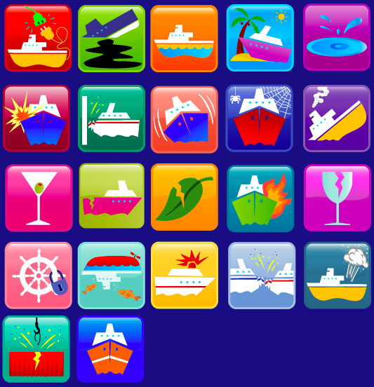
01.06.2010 17:53
BAGs in Google Earth - video
I have been playing with CaptureMe on
the Mac to record some screen casts. It's not super powerful, but
for clips without sound and under 60 seconds, it gets the job
done.
01.06.2010 11:36
beamer from org mode to create presentations
I just started using org mode with beamer (org-beamer)to
create presentations. There is not as much control and fiddle
potential as PowerPoint or KeyNote, but the idea of creating a
presentation from org-mode is pretty exciting. On my Mac, I had to
install some stuff to get beamer and to have an org-mode that is
new enough to know how to do beamer.
That's pretty basic, but with beamer is is possible to make some pretty impressive slides. Beamer slide gallery:
fink install latex-beamer wget http://orgmode.org/org-latest.tar.gz tar xf org-latest.tar.gz cd org-mode make make install prefix=~/.emacs-lisp ls ~/.emacs-lisp/share/emacs/site-lisp mv ~/.emacs-lisp/share/emacs/site-lisp /Users/schwehr/.emacs-lisp/orgI then added this to my ~/.emacs:
(setq load-path (cons "~/.emacs-lisp/org" load-path))Now to create a quick presentation:
#+LaTeX_CLASS: beamer
#+LaTeX_CLASS_OPTIONS: [presentation]
#+BEAMER_FRAME_LEVEL: 1
#+BEAMER_HEADER_EXTRA: \usetheme{default}\usecolortheme{default}
#+COLUMNS: %40ITEM %10BEAMER_env(Env) %10BEAMER_envargs(Env Args) %4BEAMER_col(Col) %8BEAMER_extra(Extra)
* Is this a slide
- Some bulleted items
- Two
- Three
* How about a slide with a picture
[[/Users/schwehr/projects/blog/nb/attachments/2009-12/gdal-color-relief-bag-overview.png]]
Then I built the presenation by doing C-c C-e d, which is
the normal command to create a LaTeX pdf. Here is the LaTeX source
that org-mode created to do the beamer presentation:
% Created 2010-01-06 Wed 11:27
\documentclass[presentation]{beamer}
\usepackage[utf8]{inputenc}
\usepackage[T1]{fontenc}
\usepackage{graphicx}
\usepackage{longtable}
\usepackage{float}
\usepackage{wrapfig}
\usepackage{soul}
\usepackage{amssymb}
\usepackage{hyperref}
\title{beamer}
\author{Kurt Schwehr}
\date{06 January 2010}
\usetheme{default}\usecolortheme{default}
\begin{document}
\maketitle
\begin{frame}
\frametitle{Outline}
\setcounter{tocdepth}{3}
\tableofcontents
\end{frame}
\begin{frame}
\frametitle{Is this a slide}
\label{sec-1}
\begin{itemize}
\item Some bulleted items
\item Two
\item Three
\end{itemize}
\end{frame}
\begin{frame}
\frametitle{How about a slide with a picture}
\label{sec-2}
\includegraphics[width=10em]{/Users/schwehr/projects/blog/nb/attachments/2009-12/gdal-color-relief-bag-overview.png}
\end{frame}
\end{document}
The presentation viewed in Preview: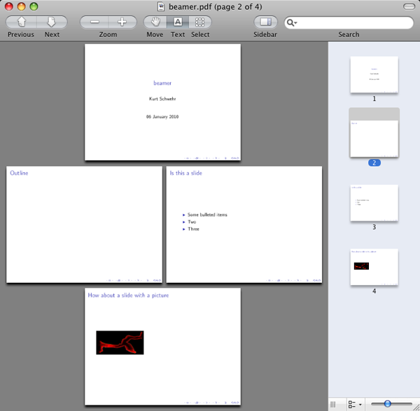
That's pretty basic, but with beamer is is possible to make some pretty impressive slides. Beamer slide gallery:
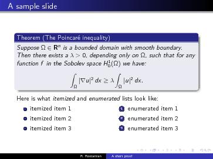
01.05.2010 08:30
Enthought Python Distribution (EPD) version 6
Just got a note that EPD 6 is out. The big news is that
it is now based on python 2.6, whereas the prior version was based
on 2.5. There are a number of small 2.6 features that I started
using right off that I am now hooked on, but these things were not
available in EPD. This seriously bit me last semester when I was
leading training on creating KMLs using python. I had used the
format string method in my script. During class, I had to
back port the code and get it to everyone so that they could follow
along on their PCs.
On a somewhat related note, Val has gotten back into blogging and has been looking more into bridging Matlab and C and Python to Matlab.
On a somewhat related note, Val has gotten back into blogging and has been looking more into bridging Matlab and C and Python to Matlab.
01.02.2010 17:28
Beginnings of an org-mode log book template
I am really not the strongest emacs
user, but I am getting towards having something that I can use for
much more effective daily logging. My blog is for the public stuff
and the electronic {lab notebook, log book, work log} is just for
my local consumption. I am starting to develop a template for what
a day based journal might look like. Monica showed me that I can
set a lot of customization by starting with C-c C-e t to
insert a template of parameters. Here is what I have so far:
I'm sure that I can eventualy create a keyboard shortcut to insert a basical template for a day. If anybody has suggestions, I am all ears. Would be great to have it use a geolocation service to insert a best estimate of my present location. It's too bad that MacBook Pro's don't have a GPS built in for when it's in the field taking notes. I always forget to take along my bluetooth GPS and it's work to look at the iPhone.
BTW, it's great to see other's blogging about things they try... e.g. Michelle's How did I do that again?
Local Variables:
mode: org
mode: flyspell
compile-command: "open kurt-2010.html"
End:
#+TITLE: 2010 Work Log Book
#+AUTHOR: Kurt Schwehr
#+EMAIL: schwehr@ccom.unh.edu
#+DATE: $Date: $
#+DESCRIPTION: Electronic Lab Notebook (ELN)
#+TEXT: $Id: kurt-2010.txt 12967 2010-01-02 22:11:15Z schwehr $
#+KEYWORDS:
#+LANGUAGE: en
#+OPTIONS: H:3 num:nil toc:t \n:nil @:t ::t |:t ^:t -:t f:t *:t <:t
#+OPTIONS: TeX:t LaTeX:nil skip:t d:nil todo:t pri:nil tags:not-in-toc
#+INFOJS_OPT: view:nil toc:nil ltoc:t mouse:underline buttons:0 path:http://orgmode.org/org-info.js
#+EXPORT_SELECT_TAGS: export
#+EXPORT_EXCLUDE_TAGS: noexport
#+LINK_HOME: http://schwehr.org
* Jan 01 - City, ST <2010-01-01 Fri> :day:
C-. to insert a timestamp
To convert html, do M-x org-export-as-html. Or convert and open: C-c C-e b
- Note taken on [2010-01-01 Fri 23:01] \\
Adding a note is done with C-c C-z
* Jan 02 - City, ST <2010-01-02 Sat> :day:
** Learning more about org-mode
http://orgmode.org/worg/org-faq.php#fontified_source_code_w_latex
[[file:/Users/schwehr/projects/blog/nb/attachments/2010-01/emacs-org-mode-and-flyspell.png]]
#+BEGIN_HTML
<hr/>
#+END_HTML
Here is what it looks like so far: 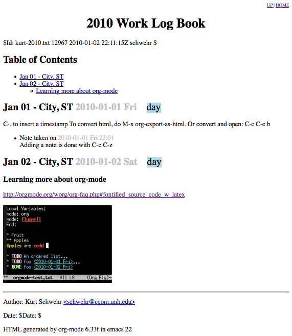
I'm sure that I can eventualy create a keyboard shortcut to insert a basical template for a day. If anybody has suggestions, I am all ears. Would be great to have it use a geolocation service to insert a best estimate of my present location. It's too bad that MacBook Pro's don't have a GPS built in for when it's in the field taking notes. I always forget to take along my bluetooth GPS and it's work to look at the iPhone.
BTW, it's great to see other's blogging about things they try... e.g. Michelle's How did I do that again?
01.01.2010 23:02
emacs org mode and flyspell for spelling
I finally figured out how to have a
file that does both org mode and spell checking without making them
global .emacs settings.
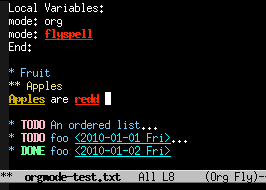
Local Variables: mode: org mode: flyspell End:There is still a lot more to learn about making an effective org mode document, but this is definitely coming along. Time to start reading more about what it can do.
01.01.2010 11:06
Electronic Lab Book - Emacs Org-Mode
I have been wanting to switch to some
form of parsable electronic
lab book format. My requirements are that it has to travel with
me (e.g. on a ship or plane without internet), must be plain text
(xml would be good), and must not be tide to some company that will
disappear. I have a one big text file per year with a very simple
day delimiter. It's grep'able, but not very well organized. For
example, I don't have a format for contact info or meeting. I can't
include images and there isn't a pretty print option to create a
printable solution. I really want a format that I can use for the
next 30 years.
Anne Wright has the honor of getting me to start doing the one monster text file per year logging style... logs I can actually use without toting around all my paper log books that I don't fully write in anyway. I think this was in March of 2004 during the early months of MER mission ops on Mars.
Back in 2005, Jeff Dingler showed me NoteTaker, which he was using very effectively. Brian Calder has his own XML format and XSLT style sheets to produce his lab books, but it isn't something that he has released to the public. After Terry mentioned emacs org-mode, Lorenzo F. gave me a tutorial of org mode. Lorenzo completely blew me away. org-mode is missing a lot, but it is way more powerful than a lot of what I've seen. I wish it were XML from the get go. Now it's Jan 1, 2010 and it is time to start the 2010 file, so I am going to give org-mode a go. I've use emacs for just about 20 years and I am sure that it will be around for a long time to come.
Options that are iteresting, but I not going to try:
A quick test file... Open orgmode-test.txt and enter org mode by typing M-x org-mode
The latex export and resulting pdf is not as satisfying with the default output:
org-mode-test.pdf
Now I just want to be able to have auto date/time based merge from multiple devices including laptops, email, and MobileOrg iphone app. And can we get it to support MathML or LaTeX equations.
Anne Wright has the honor of getting me to start doing the one monster text file per year logging style... logs I can actually use without toting around all my paper log books that I don't fully write in anyway. I think this was in March of 2004 during the early months of MER mission ops on Mars.
Back in 2005, Jeff Dingler showed me NoteTaker, which he was using very effectively. Brian Calder has his own XML format and XSLT style sheets to produce his lab books, but it isn't something that he has released to the public. After Terry mentioned emacs org-mode, Lorenzo F. gave me a tutorial of org mode. Lorenzo completely blew me away. org-mode is missing a lot, but it is way more powerful than a lot of what I've seen. I wish it were XML from the get go. Now it's Jan 1, 2010 and it is time to start the 2010 file, so I am going to give org-mode a go. I've use emacs for just about 20 years and I am sure that it will be around for a long time to come.
Options that are iteresting, but I not going to try:
- Electronic lab notebook on MacResearch.org
- NoteTaker
- TiddlyWiki - wiki in a file, or wiki on a stick (woas)
- MacResearch.org electronic lab book discussion
- LaTeX labbook
- EverNote
- Journler - Development has ended
- Collaboratory - eln and sam - Development has ended
- Stanford's School of Medicine: Where can I get an electronic laboratory notebook?
- eLog - Val and I have used this for jointly maintaining field computers
- XMind / FreeMind and other mind mapping type programs.
- Emacs journal mode, EmacsMuse, and EmacsWikiMode - However Muse does look very interesting.
- orgmode.org
- Get Organized with Emacs Org-mode [LinuxJournal]
- org mode and the Mac
- useful emacs and org-mode hacks
- It's fairly easy to parse: Orgnode - reading org-mode in Python
A quick test file... Open orgmode-test.txt and enter org mode by typing M-x org-mode
* Fruit
** Apples
Apples are red
* TODO An ordered list
1. First ordered item
- one
- two
+ aaaa
+ bbbb
2. A link
../
3. An Image
../attachments/2009-12/R2R_flow.png
* TODO foo <2010-01-01 Fri>
* DONE foo <2010-01-02 Fri>
Then run M-x org-export-as-html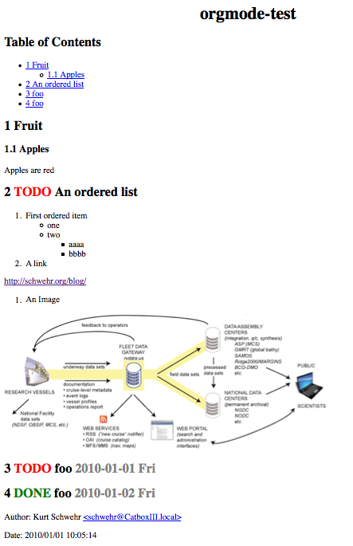
The latex export and resulting pdf is not as satisfying with the default output:
org-mode-test.pdf
Now I just want to be able to have auto date/time based merge from multiple devices including laptops, email, and MobileOrg iphone app. And can we get it to support MathML or LaTeX equations.